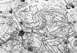
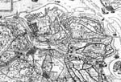
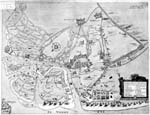
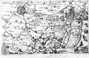
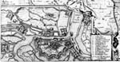
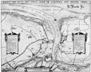
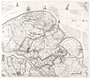

OOSTENDE VERLOREN, SLUIS GEWONNEN, 1604
Tentoonstelling in de Universiteitsbibliotheek van 12 augustus - 12
september 2004
Samenstelling: Dirk de Vries
Met bijdragen van Charles van den Heuvel, Anton van der Lem en Piet Lombaerde
Catalogus 4 [7]
Dirk de Vries & Piet Lombaerde
30 Het beleg in de Nassausche Laurencrans van Orlers, 1610
Sluys / [gegraveerd door Floris Balthasar].
[Leiden 1610].
Ets en gravure ; 20 x 32 cm. Met bijkaart van IJzendijke.
Uit: J.J. Orlers, Den Nassauschen Laurencrans. Leiden : H. Haestens, 1610.
CollBN P 37 N 73.
Toelichtende tekst in het Hoofdstuk ‘Cartografische beeldkroniek’, nr. 14.
31 Het beleg in De Nassausche oorloghen van Baudartius, 1616
Sluis.
[Amsterdam 1616].
Ets en gravure ; 12,5 x 16 cm.
Uit: W. Baudartius, De Nassausche oorloghen. Afbeeldinghe ende beschrijvinghe van alle de veldslagen […]. Amsterdam : M. Colijn, 1616.
CollBN P 37 N 76.
Toelichtende tekst in het Hoofdstuk ‘Cartografische beeldkroniek’, nr. 17.
32 Het beleg in de stedenatlas van Joan Blaeu, 1649
Slvsa expvgnata virtute Ill.mi Princ. Mavritii Nassavii […] Anno MDCIIII.
[Amsterdam 1649].
Ets en gravure ; 37,5 x 49,5 cm.
Voor het eerst uitgegeven in J. Blaeu, Novum ac magnum theatrum urbium Belgicae Regiae. Amsterdam 1649.
CollBN P 37 N 78
Toelichtende tekst in het Hoofdstuk ‘Cartografische beeldkroniek’, nr. 18.
Poging tot reconquista van Sluis in 1621 en epiloog
Na de afloop van het Bestand op 26 maart 1621 werd de strijd direct hervat in het door de Staten-Generaal bezette deel van Vlaanderen. Om een einde te maken aan de plundertochten die de Staatsen vanuit Sluis weer ondernamen werd in september de aanval vanuit twee hoeken ingezet in een poging Sluis en het Eiland van Cadzand te heroveren. Vanuit oostelijke richting trokken troepen op uit Gent en Antwerpen, terwijl zich ook een aanzienlijke macht onder bevel van Inigo, komend van Oostende, aan de westkant tussen Sluis en de kust concentreerde. De Spaanse opmars kwam een heel eind, maar werd door kordaat optreden van Haultain, de gouverneur van Sluis, bij de schansen rondom Oostburg afgeslagen. Onmiddellijk daarna werden grote delen van het omliggende land onder water gezet om herhaling van een dergelijke verrassingsaanval te voorkomen. De Staten-Generaal hadden duidelijk de intentie getoond dit stukje Vlaanderen te willen behouden.
33 Het latere Staats-Vlaanderen tegen het einde van het 12 jarig Bestand, ca. 1620
Caerte van(de) rechte gheleghentheijt van(de) Zeecuste beghinnende boven Blanckenberghe tot Berghe(n) op Zoom met de steden landen polders ende wateren [...] / Met Preuelege Jacques horenbault.
Gent : Jacques Horenbault, ca. 1621.
Ets en gravure ; 32,5 x 90 cm.
CollBN 009-13-013
¶ Deze kaart is de eerste gedrukte waarop de noordelijke strook van Vlaanderen, het latere Staats- en na 1814 Zeeuwsch-Vlaanderen in zijn geheel, de westelijke en oostelijke delen gezamenlijk, is weergegeven. De als cartograaf en graveur in Gent werkzame Jacques Horenbault geeft de regio weer zoals die er tegen het einde van het Twaalfjarig Bestand bij lag. Hier en daar is van de pauze in de strijd gebruik gemaakt om ondergelopen land in te polderen, maar het grootste deel laat de wonden van de oorlog nog zien, inundaties en met name in het westelijke, door de Republiek bezette deel, veel forten en vestingen.
Van het linker blad geeft Horenbault, zodra het Bestand is verlopen en de aanval op de posities van het Staatse Leger rondom Sluis is geopend, een nieuwe, geheel bijgewerkte staat uit onder een afzonderlijke titel: Warachtighe afbeeldinghe van(de) Sluijs midtghaders van(de) ieghenwoordighen Co.: mast legher daer ontrent gheleghen met het impressum: Gandavi : Iacques Horenbault, 1622. Het gebied rondom deze stad is door de Staten-Generaal met nieuwe forten, zoals Retranchement en Oostburg, en met talrijke inundaties in staat van verdediging gebracht en op de linker oever van het Zwin hebben de aartshertogen hun posities versterkt. Van deze voor de geschiedenis van Sluis zo belangrijke tweede uitgave zijn mij drie exemplaren bekend, waarvan dat uit de Atlas van Stolk te Rotterdam hier op de tentoonstelling in foto wordt getoond.
|  |  |
34 Sluis bij verrassing opnieuw aangevallen, 1621
Afbeeldinge van Sluys met alle stercten van beyde seyde(e)n.
t’Amsterdam : Francois vanden Hoeie, [ ca. 1622].
Ets, ingekleurd ; 38 x 51 cm.
CollBN P 37 N 84.
Met legende (1-18) van de nieuwe fortificatie van Sluis, aangebracht tijdens het Bestand.
|  |
35 Hogenbergs’ weergave van de aanval van 1621
Eigentliche Abbildung der starcke Statt Sluys, mit allen ihren Forten, Schansen vnd durchgegraben Teychen, vnd Polders, wie sie ietz lauffend. 1621. anzusehen sein, sampt des Konings Leger darumben
[Köln : Hogenberg, 1621].
Ets ; 19,5 x 28,5 cm. Met verzen onder de prent 22 x 28,5 cm.
CollBN P 37 N 80.
In: Hogenberg, Geschichtsblätter. Köln ca. 1570-1632.
¶ De kaart in vogelvlucht toont het gebied tussen Blankenberge en Vlissingen, Brugge en Sas van Gent, opgesierd met legers, forten en inundaties
36 Illustratie uit een te Frankfurt uitgegeven nieuwstijding, 1622
Abriss der Gelegentheit der Statt Schleuss wie solche von Spanischen attacquirt worden.
[Frankfurt a. M. : Sigismund Latomi, 1622].
Ets ; 18,5 x 30 cm.
CollBN 009-11-001.
¶ Het gehele gebied dat bij deze verrassingsaanval op Sluis was betrokken is hier afgebeeld tot en met de twee uitvalsbases, Antwerpen en Gent. De positie die de Spaanse bevelhebber Inigo ten zuiden van het Zwin had ingenomen is duidelijk aangegeven. Dit kaartje verscheen als illustratie bij het desbetreffende verslag in de Mercurius Gallobelgicus, een te Frankfurt uitgegeven nieuwstijding, waaruit ook de onder nummer 24 getoonde kaart van het beleg van 1604 afkomstig is.
|  |
37 Een bestaande kaart aangepast aan de nieuwe omstandigheden, ca. 1625
Caerte van t’Vrije synde een gedeelte en lidt van Vlaenderen waer in vertoont wert de teghenwoordige gheleghentheijt van de Stadt Sluys Cadsand ende doorgesteken polders.
[Amsterdam] : C.J. Visscher en H. Hondius, [ca. 1625].
Ets en gravure ; 38 x 42 cm.
CollBN P 37 N 51
Toelichtende tekst in het Hoofdstuk ‘Cartografische beeldkroniek’, nr. 16.2.
|  |
38 De ingenomen posities rondom het Zwin, anno 1627
Kaerte van Sluys, het Zwin ende de schansen aen weder syden. / [door Drexeler].
[Amsterdam] : Claes Jansz. Visscher, 1627.
Ets en gravure, ingekleurd ; 36 x 45 cm.
CollBN P 37 N 82
¶ De statusquo van de ingenomen posities, zoals op deze kaart voorgesteld, komt tot uitdrukking in de layout waarin de twee legendes visueel het evenwicht van het kaartbeeld versterken. In twee identiek geornamenteerde en ingekleurde cartouches worden de stellingen vermeld die de twee partijen hebben ingenomen. Wat de kaartmaker betreft kan de vrede hier gesloten worden.
De kaart toont de monding van het Zwin en strekt zich uit over een gebied tussen de lijn Heist/Damme en halverwege het eiland van Cadzand. Nieuwe gegevens zijn de versterkingen die aan beide kanten na het einde van het Bestand zijn aangelegd, waarvan de meest recente het grote fort aan de oostoever van het Zwin is, het Retrenchement, verklaard in de rechter legende onder nummer 2.
De toeschrijving aan Drexeler is ontleend aan een handgetekende versie van deze kaart uit de Atlas Hattinga, een verzameling militaire manuscriptkaarten uit de achttiende eeuw.
|  |
39 De militaire situatie bij Sluis, gezien vanuit het Spaanse kamp, 1630
Afbeeldynghe vande rechte gheleghentheyt der stede ende haeven van Sluys [...]. Ghecopieert naer eene prente van daeten 1627 ghemaect bij J. de Visschere toehooren(de) den Grave van Fonteine / A. Villegas f.t
1630.
Manuscript, gekleurd. 39,5 x 44,5 cm.
CollBN P 37 N 83
¶ Behalve de auteur Villegas wijzen ook termen als ‘Sconynx syde’en ‘gherebelleerde syde’ naar het Spaanse kamp als oorsprong van deze kaart. Bovendien werd als voorbeeld een kaart gebruikt die de auteur bij de graaf Fontaine had aangetroffen, de bevelhebber van de Spaanse troepen in Vlaanderen. Zoals Villegas dit zelf aangeeft, betreft het de hieraan voorafgaande kaart van Claes Jansz. Visscher. In de Collectie Bodel Nijenhuis berust nog een tweede door Villegas getekende kaart, die een iets groter gebied van westelijk Staats-Vlaanderen laat zien. Op beide kaarten legde Villegas in de stijl van tekenen veel nadruk op het ingewikkeld stramien van kreken, vaarten en verdronken landen en op de talrijke forten, schansen en redouten, alsof hij wilde aangeven dat een herovering van dit gebied onbegonnen werk was.
40 Het nieuwe aanzien van westelijk Staats-Vlaanderen, 1656
[Blad 7 van de wandkaart] Zelandiae comitatus novissima tabula / delineata per Nicolaum I. Visscherum.
Amsterdam : N. Visscher, 1656.
Ets en gravure ; 47 x 53,5 cm.
CollBN 002-15-047.
¶ Het blad linksonder van de negenbladige wandkaart van Zeeland van Claes Jansz. Visscher toont het westelijk deel van Staats-Vlaanderen zoals het zich door nieuwe inpolderingen na de Vrede van Münster (1648) herstelde van de onmetelijke schade die meer dan tachtig jaren oorlog daar had teweeg gebracht: Flandria Restituta. Dit blad is ook afzonderlijk verschenen, maar dan met een aangeplakte strook aan de linkerzijde, waarop de auteur/cartograaf Jacob Mogge wordt vermeld, aan wie deze geheel nieuwe cartografie is toe te schrijven. In de speciaal aan dit blad meegegeven titel geeft hij aan wat er zo bijzonder aan is: [...] vertonende d’oprechte gelegenth[eid] der Landen, Fortressen, Schansen ende de nieuw bedijckte Polders ‘t Sedert den jare 1648. Het zijn met name de met een nieuwe perceelindeling weergegeven polders waarbij Mogge eerder zelf als landmeter bij inpoldering en perceelmeting betrokken was.
|  |
Literatuur bij de hoofdstukken ‘Cartografische beeldkroniek’ en ‘Catalogus’
Alblas, J., ‘De inneming van Sluis in 1604 te Amsterdam feestelijk gevierd’. In: Oud Holland 22 (1904), p. 241-242.
Allossery, P., Geschiedkundige boekenschouw over het huidige West-Vlaanderen in ‘t algemeen en zijne gewesten in ‘t bijzonder. Brugge 1912-1913.
Bachmann, F., Die alten Städtebilder: ein Verzeichnis der graphischen Ortansichten von Schedel bis Merian. Leipzig 1939. Heruitgave Stuttgart 1965.
Bodel Nijenhuis, J.T., ‘Over de Nederlandsche landmeters en kaartgraveurs Floris Balthasar en zijne drie zonen: onbekend aan de levensbeschrijvers’. In: Het Instituut 5 (1845) p. 316-367. Herdrukt in: Acta Cartographica 7 (1970), p. 14-65.
Bossu, J., Vlaanderen in oude kaarten. Drie eeuwen cartografie. Knokke 1982.
Callenfels, H.A., ‘Schets van Staats-Vlaanderens Westelijk deel in 1604’. In: Cadsandria 1859, p. 52-58.
Campbell, T., Claes Jansz. Visscher: a hundred maps described. London 1968. (Map Collectors’ Series no. 46)
Coornaert, M., ‘De forten van het Brugse Vrije tijdens de Tachtigjarige Oorlog’. In: Rond de poldertorens. Handelingen van de kring voor heemkunde en geschiedenis ‘Sint Guthago’ 1988, p. 89-110 en 141-160.
De Ghein, R., ‘De oudste kaarten van het graafschap Vlaanderen 1538-1656’. In: Annalen van de Koninklijke Oudheidkundige Kring van het Land van Waas 97 (1994), p. 233-455.
De Leeuw, S., De familie Horenbault (± 1464-1626): een eeuw cartografie te Gent. Een biografische en cartografische studie. Gent, 1997. 2 dln. Licentiaatsverhandeling Universiteit Gent.
Debaere, O., Stedenatlas: Oostende. Een topografisch overzicht van de ontwikkelingen van een fel begeerde havenstad. Oostende 2002. (Oostendse Historische Publicaties, 9).
Eiyffinger, A.C., ‘Prent en puntdicht (Grotius’ Mauritsepigrammen)’. In: Oud Holland 92 (1978), p. 161-206.
Eiyffinger A.C., Grotius poeta. Aspecten van Hugo Grotius’ dichterschap. ‘s Gravenhage 1981.
Fontaine Verwey, H. de la, Uit de wereld van het Boek III. In en om de ‘Vergulde Sonnewyser’. Amsterdam 1979.
Hellwig, F., [Inleiding bij facsimileuitgave van] F. Hogenberg [und] Abraham Hogenberg, Geschichtsblätter. Nördlingen 1983.
Hoff, B. van ‘t, Introduction [bij de facs. uitgave van] J. Blaeu, Tooneel der steden van de Vereenigde Nederlanden. Amsterdam 1966.
Hollstein’s Dutch & Flemish etchings, engravings and woodcuts ca. 1450-1700. Volume XXXVIII. Claes Jansz. Visscher to Claes Claesz. Visscher II. Text. Compiled by Christiaan Schuckman. Roosendaal 1991.
Hollstein’s German engravings, etchings and woodcuts. Vol. XVI. Amsterdam 1975.
Hullu, J. de, De verovering van het Land van Cadzand onder het beleid van Prins Maurits van Oranje in 1604. Breskens 1904.
Kinds, K., Kroniek van de opstand in de Lage Landen 1555-1609. Actuele oorlogsverslaggeving uit de zestiende eeuw met 228 gravures van Frans Hogenberg. Z. pl. 1999. 2 dln.
Klerk, A.P. de (red.), Werken met Zeeuwse kaarten. Utrecht 2002.
Knuttel, W.P.C., Catalogus van de pamflettenverzameling berustende in de Koninklijke Bibliotheek. ‘s-Gravenhage 1889-1920. 9 dln.
Koeman, C., Atlantes neerlandici. Bibliography of terrestrial, maritime and celestial atlases and pilot books, published in the Netherlands up to 1880. 5 dln. 1967-1971.
Lantsheer, M.F. en F. Nagtglas, Zelandia Illustrata, dl. 2. Middelburg 1880. Hoofdstuk XII (Zeeuws-Vlaanderen) p. 415-487, onder andere Sluis, p. 468-475.
Lemoine-Isabeau, C. [et al.], Belgische cartografie in Spaanse verzamelingen van de 16de tot de 18de eeuw. Brussel 1985. Tentoonstellingscatalogus. Nr. 10.
Lombaerde, P., ‘Vlugschrift met voorstelling van de belegering van Oostende op 8 januari 1602’. In: L. Duerloo en W. Thomas (eds.), Albrecht & Isabella 1598-1621. Catalogus. Brussel; Leuven; Turnhout 1998. p. 94-95.
Lombaerde, P. (ed.), Met grof geschut. Vestingbouw langs de Noordzee. Oostende 1999.
Meurer, P.H., Einzelkarten des Matthias Quad (1557-1613). Herausgegeben und kommentiert. Mönchengladbach 1984.
Muller, F., Beredeneerde beschrijving van Nederlandsche historieplaten, zinneprenten en historische kaarten. Amsterdam 1863-1882. 4 dln. Heruitgave Amsterdam 1970.
Nalis, H., The Van Doetecum Family. Vol. 4: The Northern Netherlandish Years, 1583-1606. Rotterdam-Amsterdam 1998. (The New Hollstein Dutch & Flemish Etchings, Engravings and Woodcuts, 1450-1700).
Paas, J.R., The German Political Broadsheet, 1600-1700. Vol.1: 1600-1615. Wiesbaden 1985.
Rijn, G. van, Atlas Van Stolk te Rotterdam. Katalogus der historie-, spot- en zinneprenten betrekkelijk de geschiedenis van Nederland, verzameld door A. van Stolk. Amsterdam 1895-1933. 10 dln.
Schilder, G., Monumenta cartographica neerlandica VII. Cornelis Claesz (c. 1551-1609): stimulator and driving force of Dutch cartography. Alphen aan den Rijn 2003.
Selm, B. van, Een menighte treffelijcke Boecken: Nederlandse boekhandelscatalogi in het begin van de zeventiende eeuw. Utrecht 1987.
Simoni A.E.C., Henrick van Haestens, from Leiden to Louvain via “Cologne”. In: Quaerendo 15 (1985), p. 187-194.
Simoni, A.E.C., ‘Soldiers’ tales: observations on Italian military books published in Antwerp in the early 17th century’. In: The Italian book 1465-1800. Studies presented to Dennis E. Rhodes on his 70th birthday (ed. D.V. Reidy). London 1993, p. 255-290. (British Library studies in bibliography 1).
Simoni, A.E.C., Kaart van Oostende tijdens het beleg Amsterdam 1602. In: Bulletin d’information de la Bibliothèque Albert Ier, 41/3 (1997), p. 61-65.
Simoni, A.E.C., The Ostend Story. Early tales of the great siege and the mediating role of Henrick van Haestens. ‘t Goy-Houten 2003.
Sypesteyn, C.A. van, Het merkwaardige beleg van Oostende 4 Juli 1601-22 September 1604. ‘s Gravenhage 1887.
Thieme-Becker, Allgemeines Lexikon der bildenden Künstler. 20. Bd. Leipzig 1927.
Thomas, W. (ed.), De val van het Nieuwe Troje. Het beleg van Ostende 1601-1604. Leuven 2004.
Unger, W.S., Catalogus van de historischtopografische Atlas van het Zeeuwsch Genootschap der Wetenschappen. Dl. 1. Gedrukte kaarten en plattegronden. Middelburg 1931.
Van der Herten, B., Het Brugse Vrije in beeld. Facsimileuitgave van de Grote Kaart geschilderd door Pieter Pourbus. Leuven; Alphen aan den Rijn 1998.
Verbouwe, Z.J., Iconografie van de gemeenten van West-Vlaanderen. Deel 3: arrondissement Oostende. Brussel z.j.
Vries, D. de, ‘Het kostte mij’. 25 jaar aanwinsten van de Collectie Bodel Nijenhuis. Leiden 1998. Tentoonstellingscatalogus.
Westra, F., Nederlandse ingenieurs en de fortificatiewerken in het eerste tijdperk van de Tachtigjarige Oorlog, 1573-1604. Alphen aan de Rijn 1992.
Westra, F., ‘Bestaan er getekende militairtopografische kaarten of vestingplannen van Simon Stevin?’, in: Caert-Thresoor 12 (1993), p. 82-86.
Wintein, W., ‘Venster op het landschap (13). Een bijzondere polder: de Henricuspolder’. In: Mededelingenblad Heemkundige Kring West-Zeeuws-Vlaanderen 37 (2004), volgnr. 137, p. 9-1.
Zandvliet, K., ‘Kartografie, Prins Maurits en de Van Berckenrodes’. In: K. Zandvliet (red.), Prins Maurits’ kaart van Rijnland en omliggend gebied [inleiding bij facs. uitgave]. Alphen aan den Rijn 1989. p. 17-50.
Zandvliet, K. (red.), Maurits, prins van Oranje. Amsterdam; Zwolle 2000. Tentoonstelling Rijksmuseum, Amsterdam.
1600: Slag bij Nieuwpoort.
Catalogus. Nieuwpoort 2000. Tentoonstelling.
| vorige pagina | |